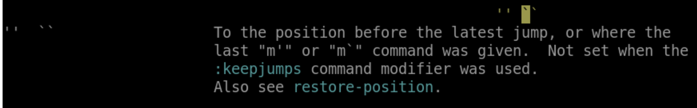
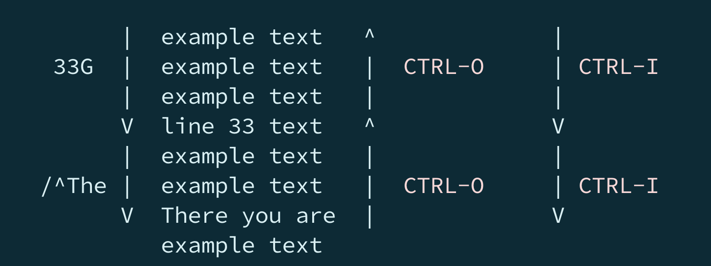
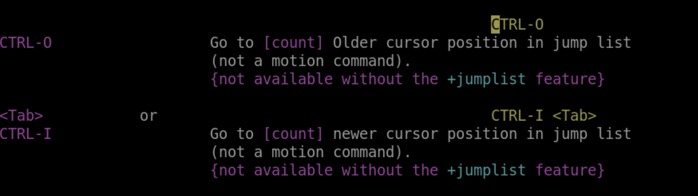
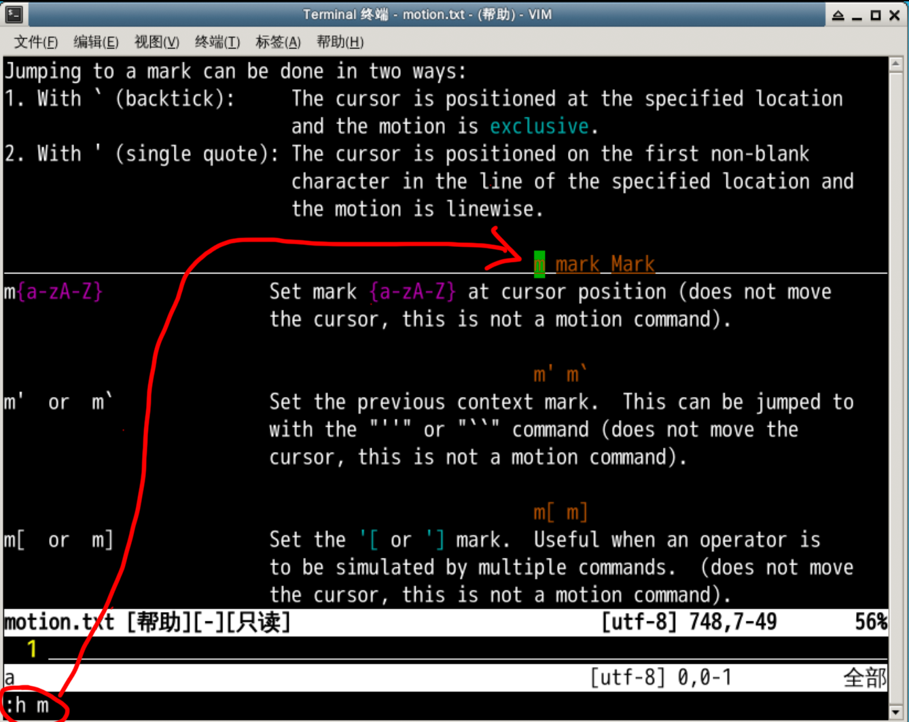
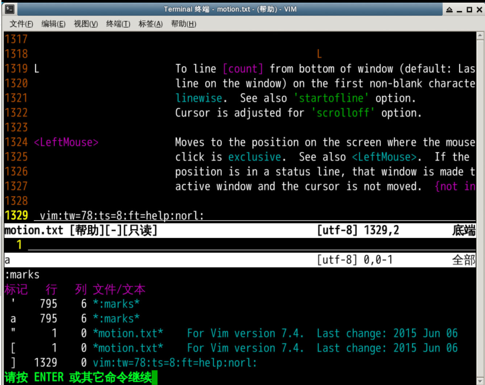
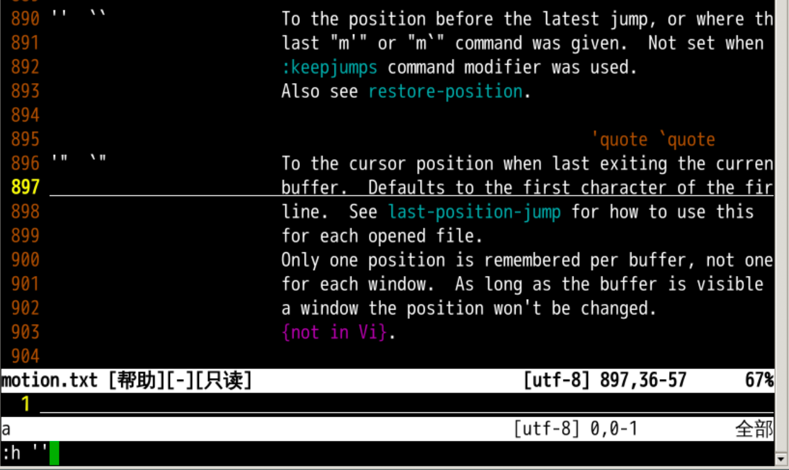
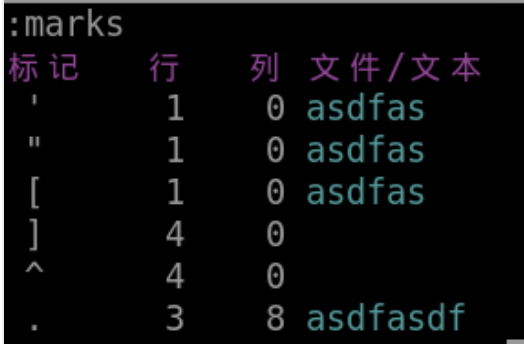
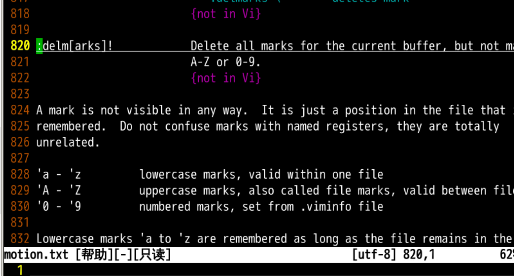

200G:se nu:se rnu:100open single quote chararcter
33 行

标记 mark
h(elp) m(arks) 查询关于标记的帮助 ma 来做一个标记 a'a 或者 `a 进行跳转:se nu 设置显示行号ma 把当前光标的位置做一个标记 a:marks 来查看所有标记
ma 是我们自己定义的 a 标记:h '' 来看 '' 的含义
'' 是上次跳转操作光标所在的位置'" 是上次退出当前文件的位置'[ 是上次编辑（删除修改等）的开始位置'] 是上次编辑（删除修改等）的结束位置'. 是上次编辑（删除修改等）的最后的操作位置

a-z 可以标记本文件内部的位置坐标A-Z 可以跨文件标记位置坐标0-9 在配置文件 .viminfo 中，可以保留标记:delm(arks) a 来删除 a 标记ma:delm a'a:marks'' 是上次跳转操作光标所在的位置'" 是上次退出当前文件的位置'[ 是上次编辑（删除修改等）的开始位置'] 是上次编辑（删除修改等）的结束位置a-z 可以标记本文件内部的位置坐标A-Z 可以跨文件标记位置坐标0-9 在配置文件 ~/.viminfo 中，可以保留标记